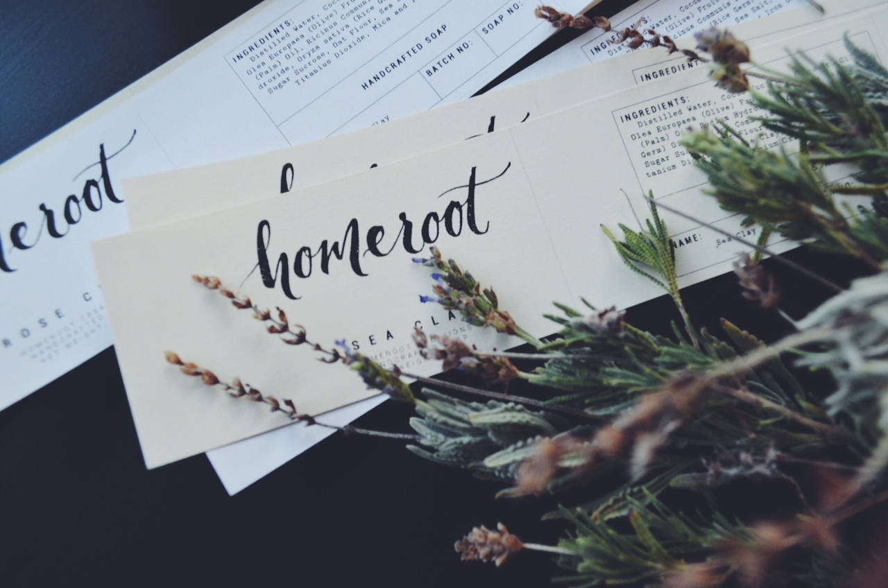

About
Homeroot Creations makes crafts with purpose and responsibility. We take great pride in what we make because we genuinely believe it is the best for you and your health. So delve into the minds of the creators and see for yourself what drives us to create such beneficial products.
Handmade Crafts Only
Environmentally Friendly
No Animal Testing
"The greatest assurance of quality we can give is a genuine passion for our craft."
We were once you: oily skin, rashes that would not go away, or incessant break outs. So, we understand your frustration when your skin is less than flawless. However, this does not mean that you should give up; clean and healthy skin should not be a far-fetched dream that is just out of our reach. It should be a daily achievement, and if you need help getting there, we are here for you!
Our goal is to improve the health for everyone and we do so in the freshest and most natural means possible. This means no toxic chemicals, no harsh corrosives, and no foreign names in the ingredients list. With our philosophy rooted in using only what is natural, we hope you feel a comforting sense of relief, knowing that we are 100% committed to your well-being. Every bar of soap comes from tireless hours and unwavering efforts in order to help you progress towards a healthier "you". After all, health is a gift that deserves to be protected!
Our goal is to improve the health for everyone and we do so in the freshest and most natural means possible. This means no toxic chemicals, no harsh corrosives, and no foreign names in the ingredients list. With our philosophy rooted in using only what is natural, we hope you feel a comforting sense of relief, knowing that we are 100% committed to your well-being. Every bar of soap comes from tireless hours and unwavering efforts in order to help you progress towards a healthier "you". After all, health is a gift that deserves to be protected!
One generic bar of soap cannot possibly cater to the plethora of skin types out there (in fact, it might actually create more problems). That is why we sell more than one kind of soap. We do not create just for aesthetics; there is a deeper purpose.
We love what we do. We are proud of what we make. For this reason, the products that we sell are the very same ones we use. In adopting a "back to the basics" movement, we champion the elegant simplicity of handmade artisan craft that is created with the well-being of others in mind. Everything is natural, everything is fresh. That is our Homeroot Creations promise to you.
We love what we do. We are proud of what we make. For this reason, the products that we sell are the very same ones we use. In adopting a "back to the basics" movement, we champion the elegant simplicity of handmade artisan craft that is created with the well-being of others in mind. Everything is natural, everything is fresh. That is our Homeroot Creations promise to you.